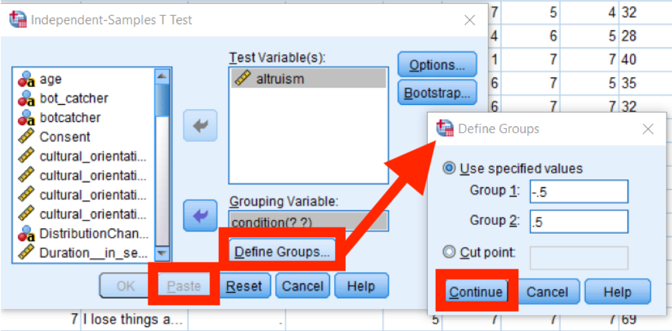

Hypothesis Testing
Types of Variables
Independent vs Dependent
Independent Variables
Independent variables are what would go on your x-axis if you drew a graph of your data. They are what "predicts" the dependent variable in your hypothesis. Anything you as the researcher have control over (like experimental condition) is an independent variable. Demographic modifiers are also a type of independent variable, because they are posed as predictive in the context of the research question and subsequent data analysis.
Dependent Variables
Dependent variables are what would go on your y-axis if you drew a graph of your data. It’s what you’re “measuring", or what is “predicted” by the independent variable. If it is something that you could not know or decide about your participants before your study, it is likely a dependent variable.
Categorical vs Continuous
Categorical Variables
Categorical variables a distinct set of finite possible values that don't need to be put in a particular order. For example: gender, experimental condition, geographic region, favorite movie, academic major, medical treatment status, hair color, political party registration, citizenship, age bracket, track meet event, or income bracket.
Continuous Variables
Continuous variables are numeric, and can have an infinite number of values (even if there are finite ends to a the range of values; the key here is to ask if a decimalized or fractional data value would be an possible data point). For example: time measurements, dates (because time is infinite), numerical age, likert scale scores, basketball team scores, weight measurements, height measurements, reaction time measurements, proportion of correct responses, number of sales, income, or distance measurements.
Some loose rules of thumb:
If you had a large set of responses and you attempted to sort the data for your variable into categories based on their exact responses or values, do you think each category would have more than one (maybe two) data points in it? Would you have a reasonable number of categories to analyze? If you compared the relationship between two of your variables, would it still match up in scope to your original question? If yes, it's likely a categorical variable. If no, it's likely a continuous variable. For example: If your research question is, "Are optimism level and political party related?", then breaking things down to the categories looks like: "Is there a difference between registered republicans' and registered democrats (categorical independent variable) level of optimism?", which isn't the same question, but covers a significant and interesting component of the original question. However, if our research question is, "Do people become more optimistic as they age? ", breaking things down into categories gives us the question, "Is there a difference in optimism level between someone who is 48 years 2 months old and someone who is 48 years 3 months old?". Comparing those two categories doesn't really speak to our original question. Or, if our question is: "Is extraverted behavior related to optimism?" and we use a likert scale of 1 to 7 to measure extraverted behavior, our question breaks down to: "Is there a difference in optimism between someone who scored 3.57 on the extraversion scale and someone who scored 6.35?" Even though these scores are very different, the "categories" of 3.57 and 6.35 are an arbitrary comparison in light of our original question.
Analysis Decision Tree
So take a moment to identify what your variables are, which ones are the independent variables, and which one is your dependent variable for the specific analysis you are about to undertake. Next, figure out for each of your dependent *and* independent variables whether the contents of its data are categorical or continuous. Then you can use this tree to figure out which is the appropriate hypothesis analysis to perform on your data.
Correlations
Use a Pearson correlation for data where both the independent and dependent variables are continuous.

Reporting in APA format:
There was [not] a significant [positive/negative] correlation between [independent variable] and [dependent variable] (r = .###, p < .##), indicating that [participants/specific population] who [experienced/showed/demonstrated] [more/less of] [independent variable] tended to have [lower/higher] [dependent variable].
T-tests
Use a t-test for data where you have one categorical independent variable that has only two data levels (i.e. is only manual vs automatic, rather than green vs yellow vs orange) and one continuous dependent variable.
With a t-test we can answer questions like: Does exposing people to a pro-social vs. non-prosocial norm influence their levels of altruism? Is gender associated with altruism?
Group statistics tells us that those in the non-altruistic condition were less altruistic than those in the altruistic condition
T-test tells us whether those means are significantly different from one another.
Reporting in APA format:
[Independent variable category 1] (M = ###; SD = ###) [do not] [report/have/show/feature] significantly [more/less] [dependent variable] between than [independent variable category 2] (M = ###; SD = ###), t = ###, p < .##.
ANOVAs
Use a one-way ANOVA for data where you have one categorical independent variable that can have two or more data levels and one continuous dependent variable.
Reporting in APA format:
A One-way ANOVA showed there was [not] a statistically significant difference in means on [dependent variable] based on [independent variable], F([between groups df],[within groups df]) = ####, p= .###, such that [independent variable category 1] (M= ###; SD = ###) [had/ did not have] significantly different average [scores/rates/etc] than [independent variable category 2] (M= ###; SD= ###)